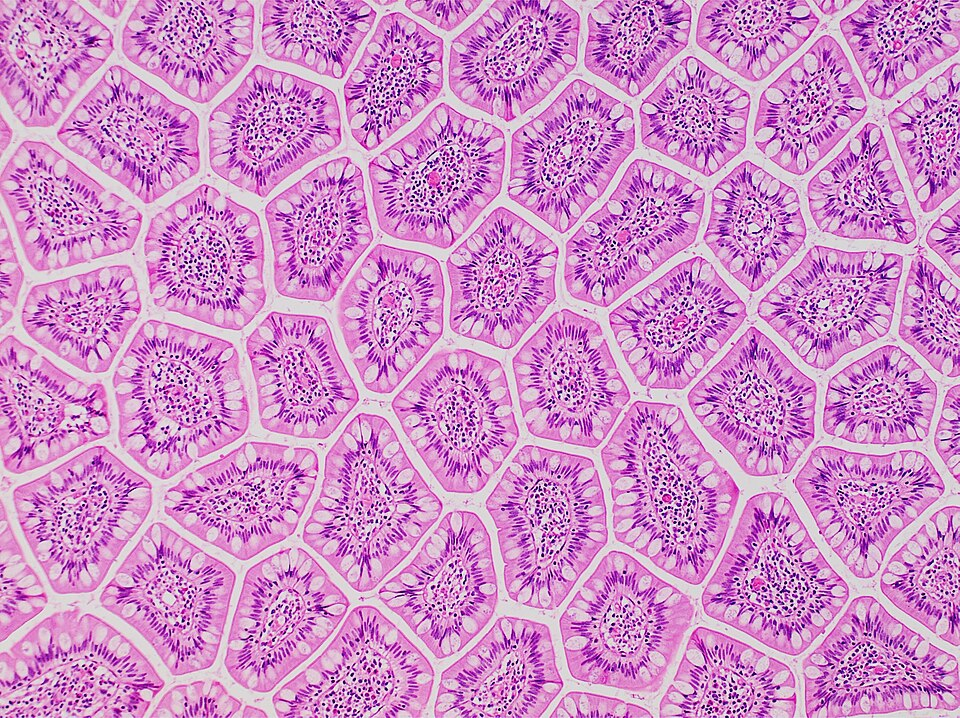

← 课堂首页
全屏

显微镜下的小肠绒毛
360° 环顾
我到哪儿了？
继续观察
知道了
这里是哪里？
继续旅行 →
跟着一块饼干，去身体里看看
先找到入口。
出发
✦
第
组 · 食物在身体里的旅行
出发前：整块饼干
口腔
磨碎·湿润
食管
蠕动运输
胃
搅拌·消化
小肠
吸收营养
大肠
吸收水分
碎屑变成湿润食团
食团向胃移动
搅拌后更细软
部分营养被吸收
水分减少，留下残余
本组发现
返回课堂
↑
前进
↓
后退